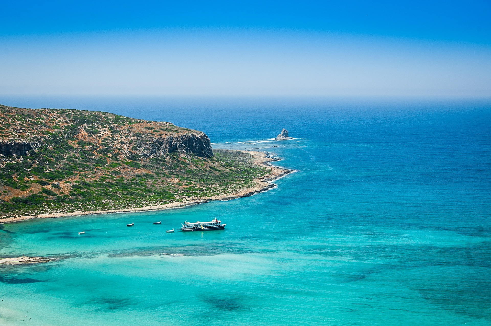

Безусловно, наибольшее внимание при выборе направления привлекают к себе острова. Так, скажем, Кикладские острова - один из самых известных архипелагов Средиземноморья - это очаровательное сочетание белого и голубого цвета в кикладской архитектуре, бесподобных песчаных пляжей и живописных часовенок с традиционным образом жизни, островными песнями и гостеприимством народа.
Напротив берегов Малой Азии расположены острова Додеканес, которые завораживают посетителей великолепными пейзажами и восхитительными пляжами, с богатым культурным наследием и традициями.
На Ионических островах, можно сказать, просто идеальный климат за счет пышной зелени. Это превосходное место для отдыха и беззаботных каникул, благодаря веселому нраву его населения.
Прекрасны для отдыха и острова, находящиеся и на северо-востоке Эгейского бассейна: это и Икария, и Самос, и Лемнос, и Митилини, и Хиос, а также и такие небольшие острова, как Агиос Евстратиос, Фурни.

Отдых в Греции ассоциируется, несомненно, и с бесконечной зеленью Крита и Спорадских островов, с их прекраснейшими пляжами с кристальной водой, которые ежегодно привлекают сюда огромное число туристов из всех уголков мира.
Хорошо развитая туристическая инфраструктура Греции предлогает современные гостиницы со всей гаммой услуг, апартаменты, многочисленные магазины, прекрасное питание и по-настоящему зажигательное греческое веселье - до глубокой ночи, а, вернее, до самого утра, что, несомненно, надолго остается в памяти - так, что вновь хочется испытать это всё наяву.Собственно включая полуостров Халкидики, представляют собой идеальное место для семейного отдыха в Греции. А многие пляжи страны удивительно подходят для серфинга и виндсерфинга.